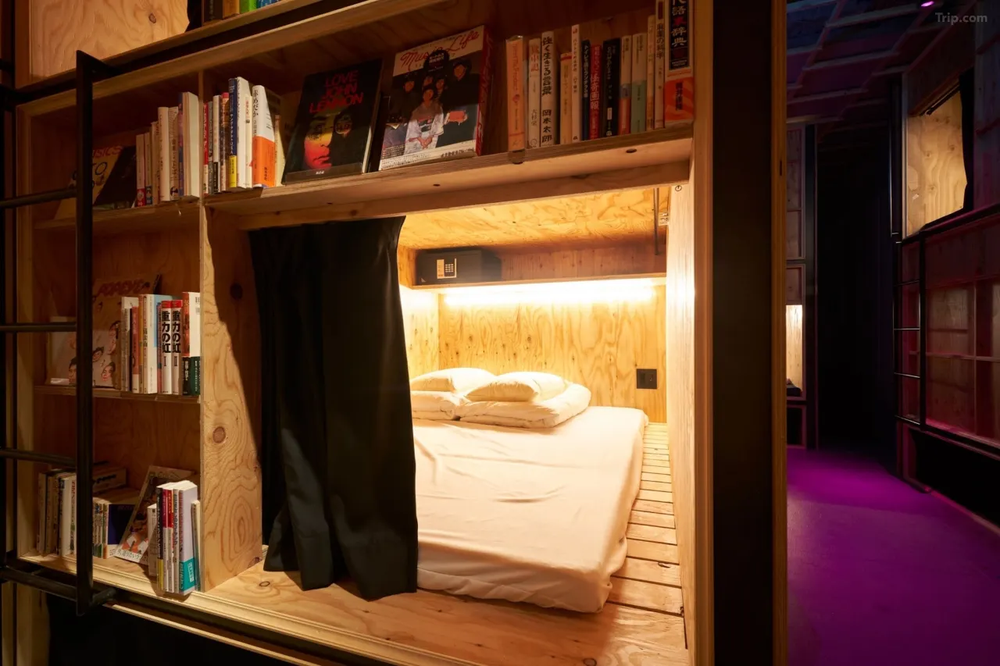
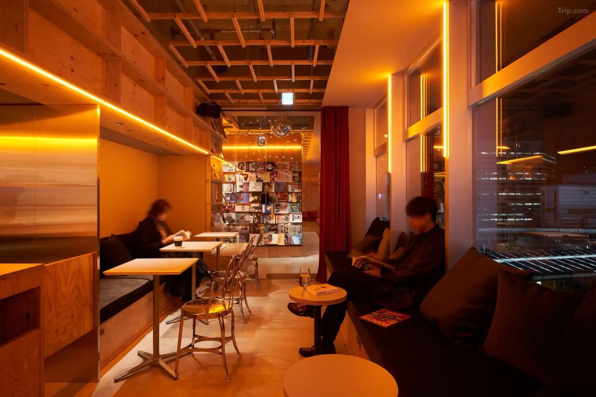
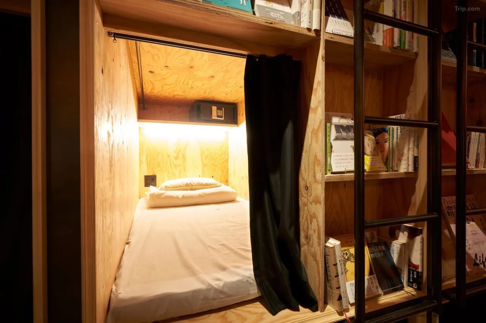
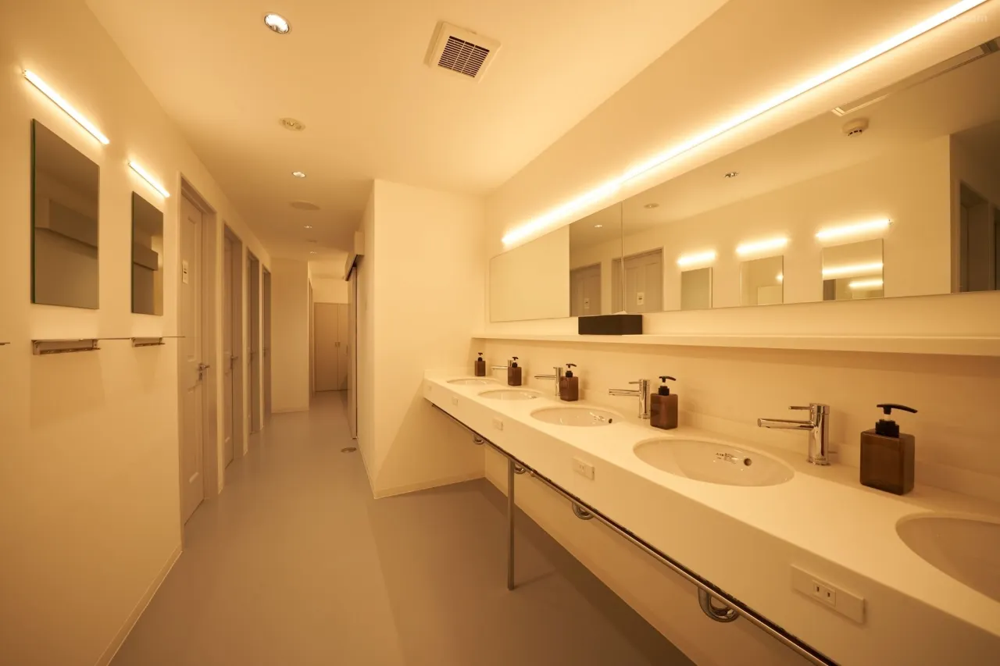
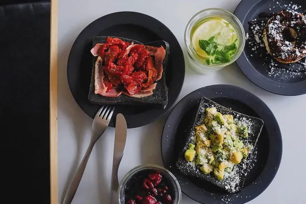
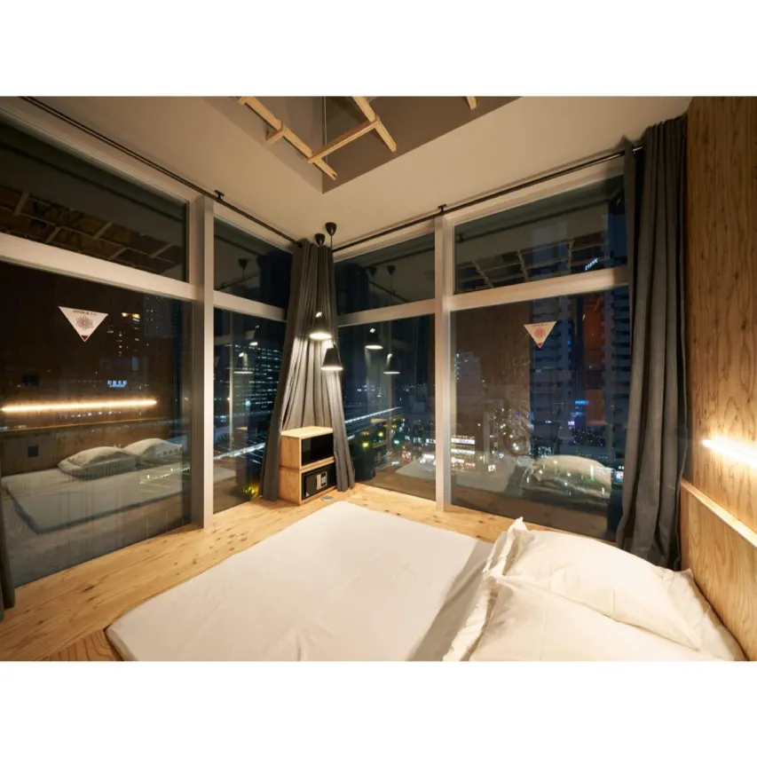
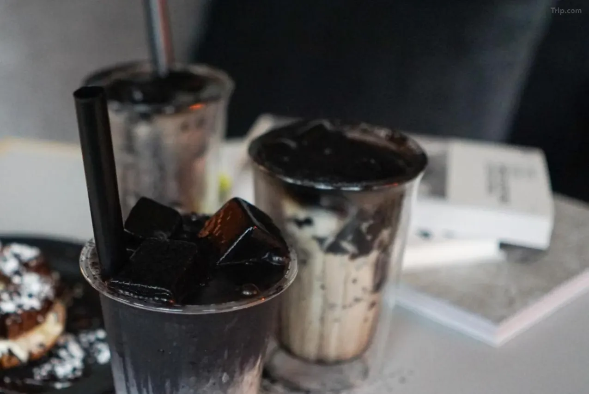

The Japanese name for Book and Bed Tokyo is 泊まれる本屋 — literally, "a bookstore where you can stay." The concept is exactly what it says. There is a large room lined floor to ceiling with bookshelves filled with thousands of books. Your bed is tucked inside those bookshelves. You pull a curtain across the entrance, reach for a volume, and fall asleep surrounded by pages. In the morning you wake up, pick up where you left off, and feel, briefly, like you are living inside the most comfortable scene in any book you have ever read.
Book and Bed Tokyo Shinjuku is the brand's largest location — 55 beds, a bar, a cafe, and one of Kabukicho's most quietly distinctive addresses.
The Concept: 泊まれる本屋
Book and Bed was founded on a single observation: the best reading experience is the one where you fall asleep mid-chapter without feeling guilty about it. Hotels do not accommodate this. Libraries do not accommodate this. Book and Bed does.

The Shinjuku location occupies the 8th floor of the Kabukicho APM Building. The main room is the bookshelves — thousands of titles spanning literature, manga, magazines, art books, and a significant English-language selection. Every guest can take any book from any shelf, read it anywhere in the property, and return it before checkout. The collection is curated rather than random, which means browsing the shelves produces the particular pleasure of finding something unexpected that you immediately want to read.
Bed types at Shinjuku divide into four categories. The Single (¥5,000/night, 95×200cm) is the most compact option — functional and sufficient. The Comfort Single (¥5,500/night, 120×200cm) adds width without changing the bookshelf integration. The Double (¥11,000/1–2 people, 120×200cm) accommodates couples. The Superior Room (¥15,000/1–2 people, 190×200cm king) is a private room with full king bed — the partition is a curtain rather than a wall, making it semi-private rather than entirely so. All beds have an individual reading light, power outlet, privacy curtain, hanger, slipper, and a small locker for valuables.
The Bar and Cafe: Book Night Drinks
The Shinjuku location distinguishes itself from the other Book and Bed branches with its bar — a full drinks service offering Japanese craft beers, cocktails, and non-alcoholic options. The bar operates alongside the cafe, which serves cooked-to-order breakfast from 7 AM to 11 AM and coffee and snacks throughout the day. Sitting at the bar with a book in hand, looking out over Kabukicho's illuminated streets below, is one of those quiet Tokyo moments that turns into a memory you describe to people for years afterward.

The WiFi password is "have a book night" — the same phrase the receptionist says when you check in, the same phrase printed on the property's social media, the same phrase that has quietly become the most charming thing about staying here. It was, early guests report, the detail that made them recommend the place to everyone they knew. The password works as a greeting, a wish, and a one-line description of the entire concept simultaneously.
The Collection: Manga, Literature, and Everything Between
The books at Book and Bed Shinjuku span approximately 4,000 titles — a number large enough to represent genuine depth across multiple categories. The manga section is significant and well-maintained, making this a particularly useful stop for international visitors who want to encounter Japanese manga in its original format without necessarily committing to a purchase. Staff rotate the collection and add new titles regularly, meaning repeat visitors reliably find something new.
The English-language selection is a practical consideration for non-Japanese readers: it includes literary fiction, travel writing, art books, and illustrated volumes that reward browsing regardless of language ability. For guests who read Japanese, the full depth of the collection opens — including back-catalogue manga, literary fiction, and the kind of obscure titles that the staff clearly selected because someone at Book and Bed loved them enough to put them on the shelf.
Location: Kabukicho, Shinjuku
Book and Bed Tokyo Shinjuku sits in Kabukicho — Shinjuku's entertainment district, one of the most energetic urban neighborhoods in Japan. From the 8th floor, guests are above the noise while surrounded by its light. Seibu Shinjuku Station is steps from the building. The Godzilla Head — the giant kaiju sculpture mounted on the Hotel Gracery building — is visible from the surrounding streets. Studio Alta, the landmark shopping building at Shinjuku's east exit, is a short walk. Shinjuku Station's full network of lines — JR, Metro, Toei, and Odakyu — is within ten minutes on foot.
One honest note from multiple reviewers: Kabukicho is lively, and the surrounding area generates nightlife noise, particularly on weekends. The hostel's 8th floor position provides significant isolation, but light sleepers on rooms facing the street should bring earplugs. Rooms on higher floors or facing away from the main street are quieter — worth noting at check-in if this matters to you.
Practical Information
- Check-in: 4:00 PM Check-out: 11:00 AM
- Beds: Single ¥5,000 · Comfort Single ¥5,500 · Double ¥11,000 · Superior Room ¥15,000
- Book collection: ~4,000 titles — manga, literature, art, magazines — Japanese and English
- Bar: Japanese craft beer, cocktails, non-alcoholic drinks
- Cafe/Breakfast: Cooked-to-order — 7:00–11:00 AM (fee applies)
- WiFi password: "have a book night"
- Adults only — credit card required at check-in
- Address: 1-27-5 Kabukicho APM Building 8F, Shinjuku, Tokyo 160-0021
- Nearest station: Seibu Shinjuku Station — steps away
- Note: Kabukicho nightlife noise on weekends — earplugs recommended for light sleepers
| Full Name | BOOK AND BED TOKYO SHINJUKU |
| Address | 1-27-5 Kabukicho APM Building 8F, Shinjuku-ku, Tokyo 160-0021 |
| Concept | 泊まれる本屋 — "A bookstore where you can stay" |
| Beds | 55 — Single, Comfort Single, Double, Superior Room (semi-private) |
| Books | ~4,000 titles — manga, literature, art, English selection |
| Bar & Cafe | Craft beer · cocktails · breakfast 7–11 AM |
| Price Range | From ¥5,000 per night (Single) |
| Nearest Station | Seibu Shinjuku Station — steps away |
Photo Gallery

Photo 2
Photo 3'">
Photo 4'">
Photo 5'">
Photo 6'">Have a Book Night
Book a shelf at Book and Bed Tokyo Shinjuku — the WiFi password is waiting for you.
Check Availability & Book →